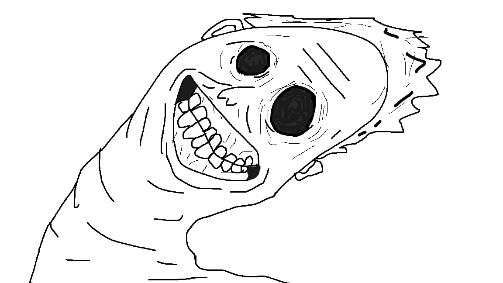

Akarachai Sukpraw

Summary
I started in game development with a love for learning. Over time, I've explored various fields, gaining experience in different areas. I enjoy trying new things and expanding my skill set. With this diverse experience, I'm excited to bring creativity, adaptability, and enthusiasm to any project.
Education
Bangkok university 2020-2023
School of Information Technology and Innovation, Games and Interactive Media. GPA 3.72
Work experience
Projects in university
- Stupid Hard Balls 3D | 2023
Project manager, Game developer
- 3D parkour game, Make stupid hard balls to 3D.
- Solo Developer project.
- Code:Half | 2023
Game developer
- 3D fighting game. The player plays as two characters, fighting threats and solving puzzles to save the town.
- I have the responsibility to create scripts for various game systems.
- The Cope | 2022
Game Designer, Game developer, Game tester
- 2D game. Player is a janitor at a mysterious hotel, completing tasks and survive the night.
- I primarily contributed to designing the main gameplay, then moved to scripting various game systems due to a lack of developers.
- Stupid Hard Balls | 2022
Project manager, Game developer, Game tester
- 2D Parkour game. The player controls a ball trying to escape the city by performing parkour moves.
- I was the project manager for this project, designing all the gameplay and scripting.
Work in game project The cope for 1 year, 12 December 2023 - 7 November 2024
Skills
Hard Skills
- Belly dance
- Unity
- C#
- Java
- Google Document
- Canva
- Trello
- Jira
- Figma
- Premier Pro
- Davinci
- Adobe Photoshop
- Blender
Soft Skills
- Belly dance
- Creative
- Flexible and Adaptive
- Teamwork
- Fast learner
- Love learning
WTF
Other
My hobbies
My contact